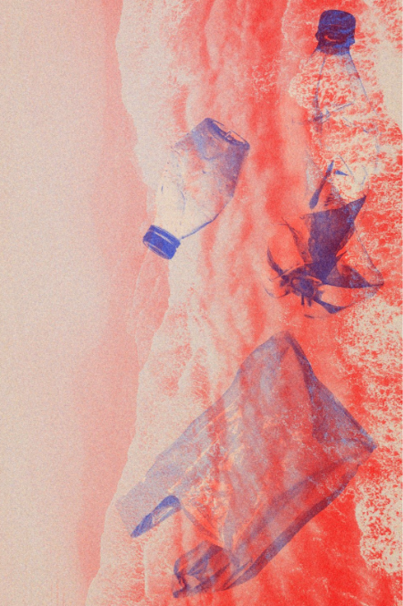
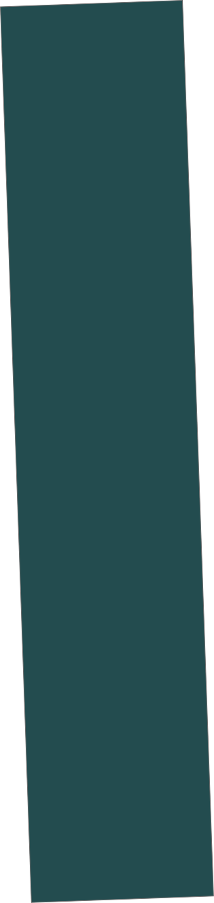
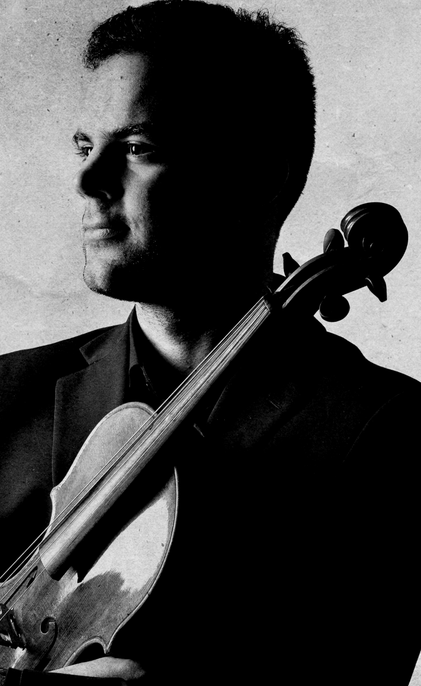
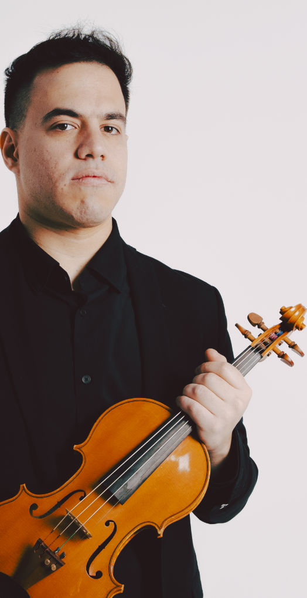
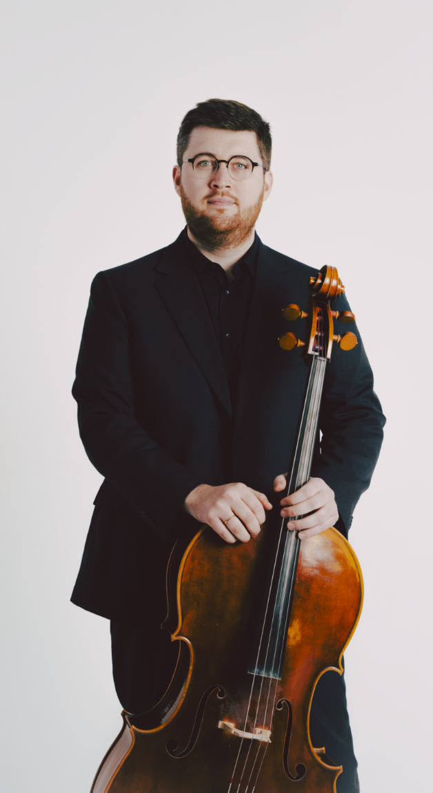
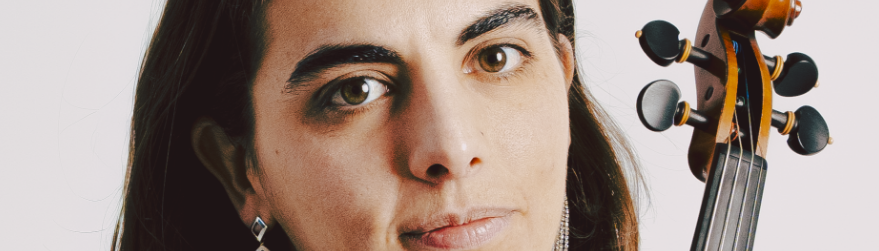
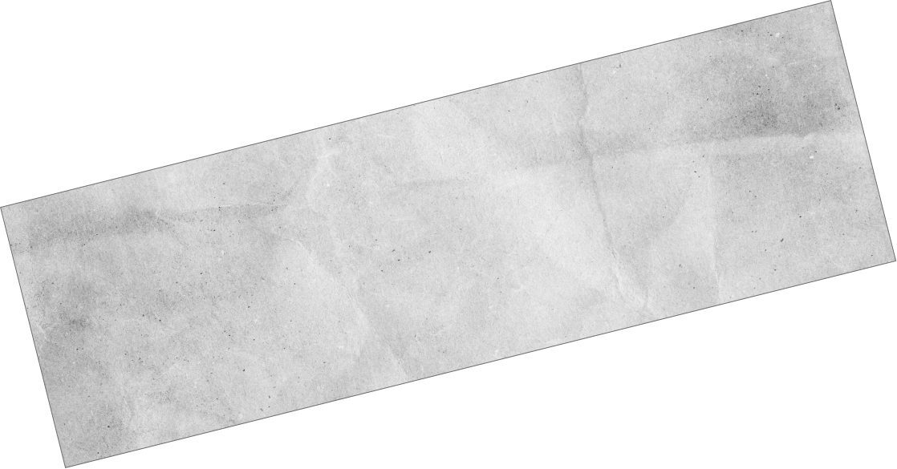
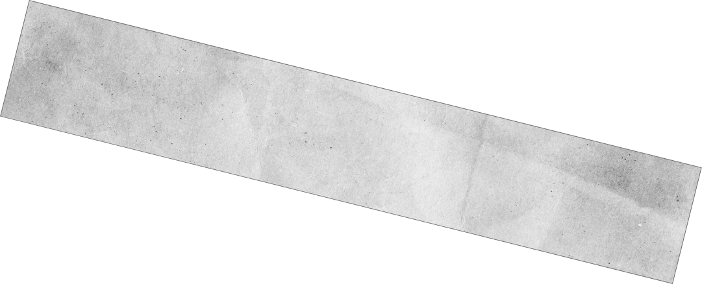
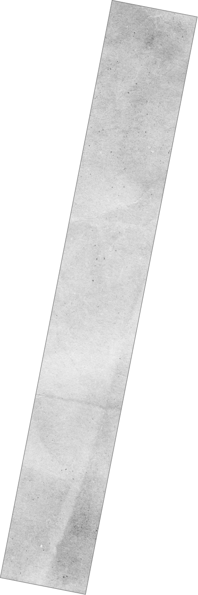
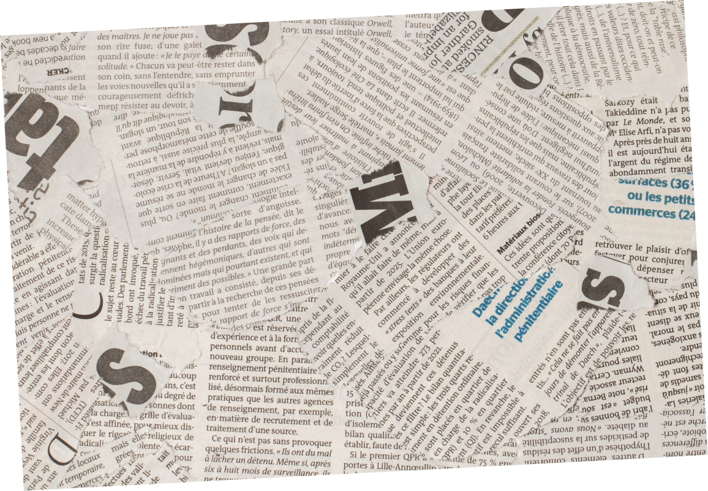
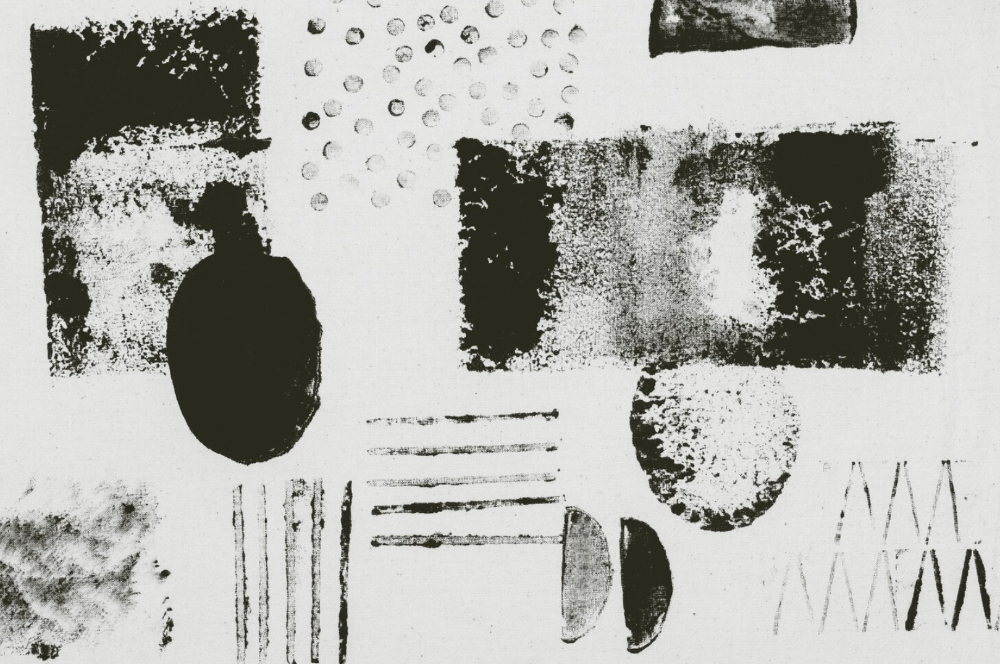
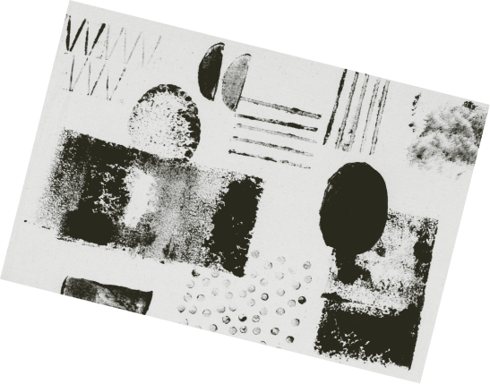
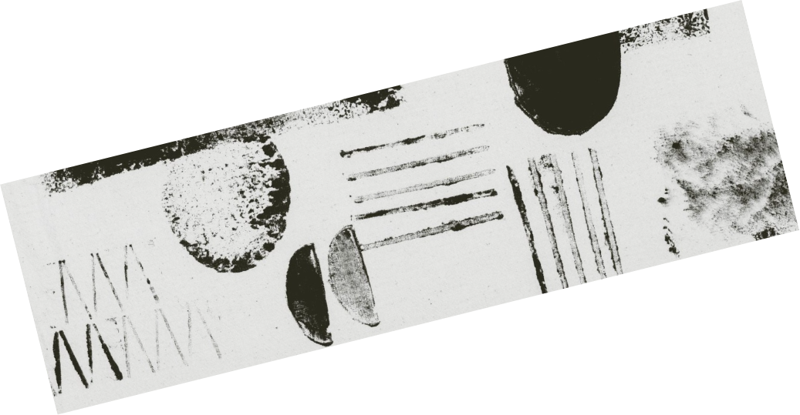
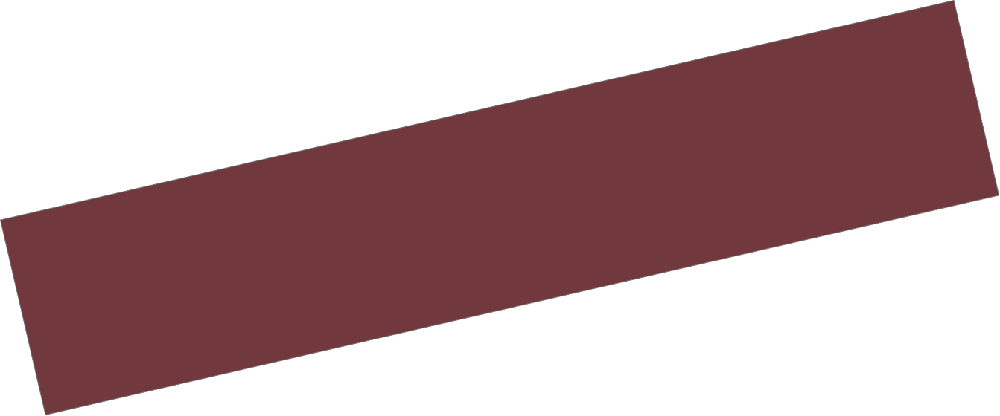

Nosotros
El Iberia no existe.
O existe solo en el escenario, el único instante en que se vuelve real.
El cuarteto
Cuando nosotros somos, el público es.
El Cuarteto Iberia mantiene la tradición cuartetística de sus maestros aportando un nuevo punto de vista a la interpretación de las grandes obras del género. Desde 2022 es cuarteto residente del Museo Lázaro Galdiano de Madrid.
Conoce al cuarteto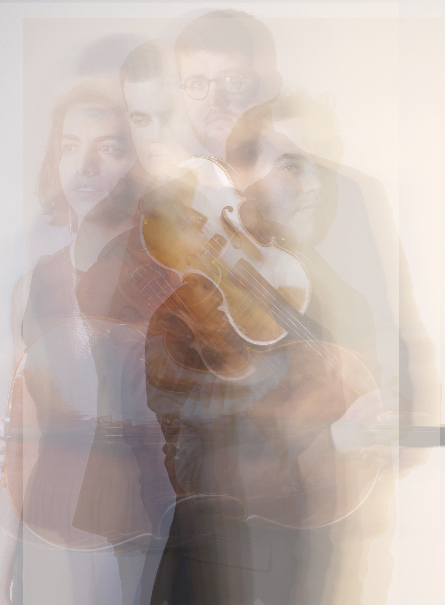
Próximos conciertos
Ver agenda completa
En agenda.
-
01
14 Jun · 2026
Museo Lázaro Galdiano
Madrid, España
-
02
04 Jul · 2026
Festival Torre de Villaescusa
Villaescusa del Bardal, Cantabria
-
03
17 Jul · 2026
Fundación BBVA
Palacio del Marqués de SalamancaMadrid, España